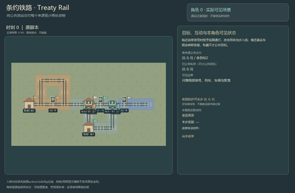
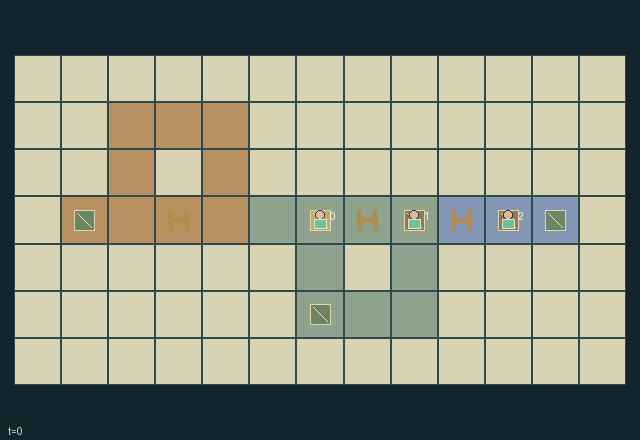

GI204 · Treaty Rail

Original recording scope: 角色0实际可见视角 · Mode: 实际诊断回放
Additional generated state replay (different trajectory / full-state debug)

Deliver at least two cargo units from each settlement's finite supply to the public depot while managing signals, passing loops and three lendable wagons.
Identity and original contract
3 independently actionable roles; 15 discrete commands per role; 188 native observation columns per role; original horizon 160 steps. Declared per-step reward range: -4 to 6. Observation regime: partially_observable.
Source SHA-256: a74e8d88af913628370cfc79562afb2921c9e3a6f9ae45d49c5c3a8c7cd7720d
The objective, rewards, population, map and horizon remain original. A preview is not a success claim.
Objective and gameplay
Deliver at least two cargo units from each settlement's finite supply to the public depot while managing signals, passing loops and three lendable wagons.
A nearby signal owner can grant time-limited peer entry or stop traffic. Native requested steps consume that same transition's grant and signal state. Loans and local recalls physically transfer the finite wagons, changing carrying capacity; loose wagons and stopped trains occupy real rail routes.
- Locomotives request one adjacent rail cell per action. A valid request may be stopped by the signal resolved in that joint step; no route is traversed automatically.
- Red signals stop all crews. Green admits its owner or a foreign crew with a positive permit. Grants last eight transitions including their issue transition.
- Signal ownership is fixed. Grant or toggle only within one cell of your own signal; other roles do not automatically see distant red/green states.
- Each wagon holds one cargo unit and a train can attach at most two. Loan your own attached wagon to an adjacent peer; recall it only when physically within one cell.
- Detached wagons occupy rail cells and block entry. Owners and designated borrowers can couple a loose wagon from within one cell.
- Load at your own settlement. The central depot receives public deliveries; your home also accepts privately rewarded stock that removes cargo from the public task.
- Old occupied cells block movement, including swaps and following. Rotating priority resolves competing destinations; visible passing loops provide alternative routes.
- Public success requires two units from every origin. Source scripts and causal pairs remain unexecuted hypotheses.
Ending: Success when public delivered counts are at least two for every cargo origin. Failure when public delivered plus banked plus loaded remaining cargo is below two for any origin, unless success. Otherwise truncate at 160.
What this game explores
Resource commons & externalities: An action changes a persistent resource or burden that another role also encounters. Compare extraction with maintenance and record the downstream resource trajectory.
Commitment, exchange & governance: Promises consume time, liquidity, access or material. Separate an announced agreement from a binding commitment and from its eventual delivery; log cancellation and expiry too.
Complementary production & service: A useful outcome requires ordered stages, scarce equipment or another role's capability. Measure real completed products and resource circulation rather than counting intermediate actions as success.
Joint transport & shared access: Positions, load geometry, occupancy and persistent access constrain whose action can succeed next. Distinguish physical handoff, shared controls and simultaneous force from a cosmetic cooperation label.
These are questions supported by rule structure, not observed learning effects.
Play it: operating walkthrough
crucibles play --game gi204Keep Python running and open its printed address. Select this game, set a seed and press Create session. The game itself is always English.
Assign a role range to Host with Assign / take over, or Assign all roles. Invite a second participant with Create player invitation, then assign a disjoint subset. Every original role is available.
For every owned role choose a legal command and press Queue. Arrow keys / WASD queue a declared directional action for the current role camera when available. Space or Advance one joint step advances everyone together. Non-directional games use the selectors.
Unqueued roles use the labelled untrained uniform-legal policy. Take over or release roles before the next step without resetting. Full-state debug is privileged and permanently logged; role cameras preserve permissions. Close the session to retain logs. Server restart does not restore sessions.
Complete command reference
IDs and English labels exactly match the manifest. Availability depends on role, resources, location and phase. An available action can still have no productive effect.
0·Wait
1·Request one rail cell north
2·Request one rail cell east
3·Request one rail cell south
4·Request one rail cell west
5·Grant next settlement eight ticks at own nearby signal
6·Grant previous settlement eight ticks at own nearby signal
7·Toggle own nearby red or green signal
8·Loan own attached wagon to lowest-ID adjacent peer with capacity
9·Locally recall own wagon from adjacent holder or loose position
10·Load one empty attached wagon at own settlement
11·Unload one wagon into the public depot
12·Put one wagon load into private stock at own settlement
13·Detach lowest-ID attached wagon at current rail cell
14·Couple a nearby loose owned or leased wagon
Roles and capability identifiers
These original role names describe capabilities, not interchangeable skins. Check each owned role's legal selector before planning handoffs.
agent_0·Western settlement locomotive and signal owner
agent_1·Central settlement locomotive and signal owner
agent_2·Eastern settlement locomotive and signal owner
Information and observation permissions
Track layout, depot and announced public/private totals are public. Locomotives, wagons and dynamic signals are visible only within Manhattan radius three. A role always sees its own settlement ledger and its own incoming permit TTL mailbox, but not distant green/red states. Local records are masked to -1 with separate visibility bits.
The GIF is full-state debug and may reveal hidden entities or private state. Train on obs[agent], not the picture, state tree or another role's private row. Field slices and visibility are in the original manifest.
Reinforcement-learning integration
import jax
from crucibles_jaxmarl import make
env = make("gi204")
key = jax.random.PRNGKey(0)
key, rk, ak, sk = jax.random.split(key, 4)
obs, state = jax.jit(env.reset)(rk)
actions = env.sample_actions(ak, state)
obs, state, rewards, dones, info = jax.jit(env.step_env)(sk, state, actions)
done = dones["__all__"]Observations are float32 vectors of width 188; actions are scalar int32; masks have 15 entries. Supply all 3 roles each transition. Masked sampling is an engineering reference, not a trained learner.
step_env retains terminal data without reset. step performs outer autoreset and keeps terminal data in info["raw_state"] and info["raw_observation"]. Use dones["__all__"] for episode boundaries; separate completion, failure and time limit in analysis.
JIT or vmap equal identities and shapes. Split independent reset, policy and transition keys. Group different shapes explicitly; do not shrink the population or horizon. Host rendering stays outside training.
Training questions and fair evaluation
Define valid completion from the objective before fitting. Preserve original rewards and also report real deliveries/services, losses, resource state, unresolved episodes and per-role returns. Animation is not a reward signal.
An action changes a persistent resource or burden that another role also encounters. Compare extraction with maintenance and record the downstream resource trajectory.
Promises consume time, liquidity, access or material. Separate an announced agreement from a binding commitment and from its eventual delivery; log cancellation and expiry too.
A useful outcome requires ordered stages, scarce equipment or another role's capability. Measure real completed products and resource circulation rather than counting intermediate actions as success.
Positions, load geometry, occupancy and persistent access constrain whose action can succeed next. Distinguish physical handoff, shared controls and simultaneous force from a cosmetic cooperation label.
Compare memory, communication or centralized critics under matched actor information. Declare critic access; keep actor inputs role-filtered. Match partner/opponent distributions, masks, compute and checkpoint selection. Final tests never enter fitting or selection.
Independent training runs or source-pairing blocks are inferential units; episodes from one policy are not independent training replications. Save hashes, keys, versions, device, time and cost. Negative, zero, failed and indeterminate outcomes are valid. No trained checkpoint or target score is supplied.
Classification and evidence
Overlapping editorial labels are reading aids, not proof of novelty, difficulty, strategic equivalence or learning effects.
- Resource commons & externalities
- Evidence
manifest.task.objective: Deliver at least two cargo units from each settlement's finite supply to the public depot while managing signals, passing loops and three lendable wagons.
- Commitment, exchange & governance
- Evidence
manifest.task.interaction: A nearby signal owner can grant time-limited peer entry or stop traffic. Native requested steps consume that same transition's grant and signal state. Loans and local recalls physically transfer the finite wagons, changing carrying capacity; loose wagons and stopped trains occupy real rail routes.
- Evidence
manifest.task.observation_access: Track layout, depot and announced public/private totals are public. Locomotives, wagons and dynamic signals are visible only within Manhattan radius three. A role always sees its own settlement ledger and its own incoming permit TTL mailbox, but not distant green/red states. Local records are masked to -1 with separate visibility bits.
- Evidence
manifest.actions.8: Loan own attached wagon to lowest-ID adjacent peer with capacity
- Complementary production & service
- Evidence
manifest.task.objective: Deliver at least two cargo units from each settlement's finite supply to the public depot while managing signals, passing loops and three lendable wagons.
- Joint transport & shared access
- Evidence
manifest.task.objective: Deliver at least two cargo units from each settlement's finite supply to the public depot while managing signals, passing loops and three lendable wagons.
- Evidence
manifest.task.interaction: A nearby signal owner can grant time-limited peer entry or stop traffic. Native requested steps consume that same transition's grant and signal state. Loans and local recalls physically transfer the finite wagons, changing carrying capacity; loose wagons and stopped trains occupy real rail routes.
- Evidence
manifest.actions.1: Request one rail cell north
Source, receipts and preview limits
The additional generated state GIF replays saved untrained legal actions through the original kernel. At most 25 actual endpoints include initial and terminal state; no invented interpolation. It is full-state debug, not the role observation. Where an original scene preview exists, it is displayed first with its own recorded information scope. The two recordings may use different trajectories and views.
Original source, observation slices, manifest and mechanism
Native receipt · Presentation receipt
Engineering passes do not establish learning. Nonzero floating differences remain recorded and undetermined; no new tolerance was introduced. Human scores remain unverified.